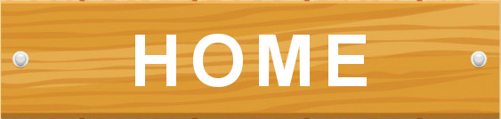

|  | |
|
|
|---|
| 爱情寄语 | Quotes of Love |
|---|
如果我能在梦中见到你，那么我多么希望我永远也不要醒过来……这样就可以一直和你在一起了。
圈子混沌、人心叵测，我从来没有如此担心过一个女孩，怕你受到低俗环境的侵染而丢失丝毫的纯洁！对我来说，你的一丝纯洁胜过全世界所有的金矿。
若能有你，一生一世，一心一意，携手相伴，此生再无他求。你的平安就是我最大的牵挂。
| 留言板 | Comments |
|---|
韦启良，英文名Tomy wai (Wai Kai Leung)，香港著名音乐创作大师，创作过很多很多经典音乐作品……
| 知识拓展 | Knownleadge |
|---|
背景音乐：雷蕾 叶凡 还在寻找你
 #
#（图片素材来自音乐人戴荃的微薄)